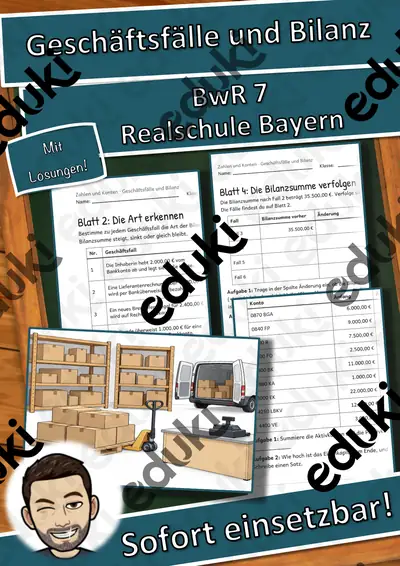
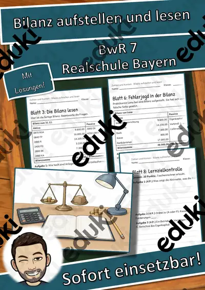
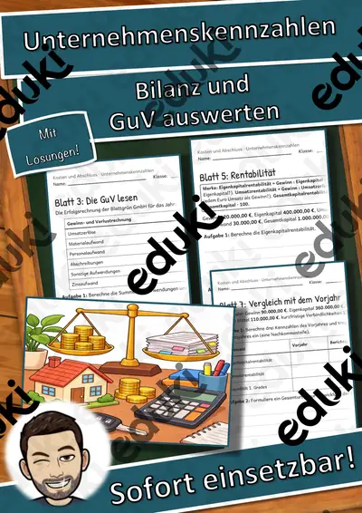

Finanzierung – Arbeitsheft mit Lösungen (BwR 9, Realschule Bayern)
Die Lernenden begleiten die Inhaberin der Bio-Hofmanufaktur Sonnenacker e. K. bei der Frage, wie ein Betrieb sein Vermögen finanziert: Sie ordnen Finanzierungsarten, lesen die Bilanz als Mittelherkunft und Mittelverwendung, berechnen Eigenkapitalquote, Verschuldungsgrad und Anlagendeckung und prüfen die goldene Finanzierungsregel. Alle Namen, Betriebe und Beträge sind erfunden.
Für das Fach Betriebswirtschaftslehre/Rechnungswesen (BwR), Jahrgangsstufe 9, an der Realschule in Bayern.
Enthalten (14 Seiten): Lehrerinfo mit Einsatzhinweisen · 9 Arbeitsblätter, u. a. Finanzierungsarten; Die Bilanz als Finanzierungsbild; Eigenkapitalquote und Fremdkapitalquote; Verschuldungsgrad; Die goldene Finanzierungsregel; Eine Investition finanzieren; Zwei Betriebe im Vergleich · Lernzielkontrolle · Lösungen zu allen Blättern.
Einsatz: Übung und Vertiefung im Unterricht, als Hausaufgabe, zur Wiederholung oder in Vertretungsstunden. Zum Ausdrucken und Kopieren.
Texte KI-gestützt und vom Autor geprüft.
Ähnliche Materialien

Von der Bilanz zu den Konten – Arbeitsheft mit Lösungen (BwR 7, Realschule Bayern)

Geschäftsfälle und Bilanz – Arbeitsheft mit Lösungen (BwR 7, Realschule Bayern)

Bilanz aufstellen und lesen – Arbeitsheft mit Lösungen (BwR 7, Realschule Bayern)

Umsatzsteuer im Betrieb – Arbeitsheft mit Lösungen (BwR 7, Realschule Bayern)

Unternehmenskennzahlen: Bilanz und GuV auswerten – Arbeitsheft mit Lösungen (BwR 10, Realschule)

Der Kontenplan: Ordnung im Rechnungswesen – Arbeitsheft mit Lösungen (BwR 8, Realschule Bayern)

Kreditkosten vergleichen – Arbeitsheft mit Lösungen (BwR 9, Realschule Bayern)